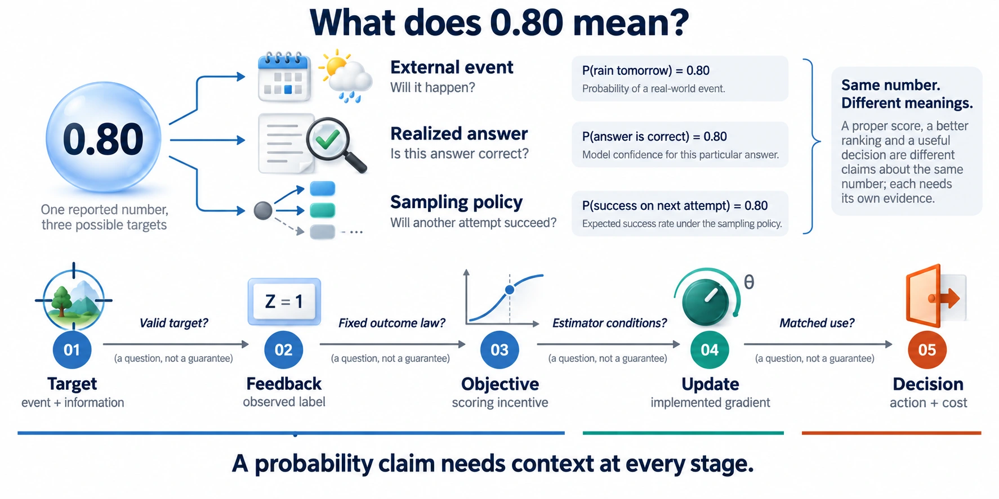
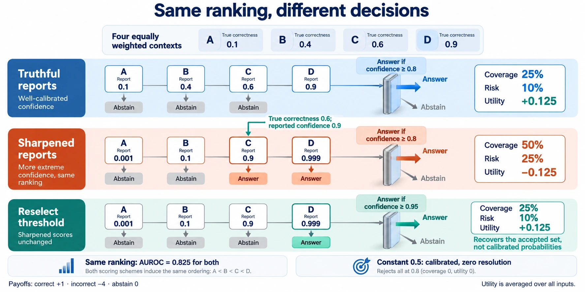

Reporting ≠ capability
An incentive for truthful confidence need not favor the policy with the highest average accuracy.
Objectives · Section 3A Survey of Objectives, Optimization, and Decision-Making
Carnegie Mellon University
Reinforcement learning can change both what a language model says and the confidence it expresses. This survey follows probability claims from their targets and training objectives through implemented updates to downstream decisions.
We bring together calibration-aware RL and its supervised and post-hoc comparators, asking when learned reports retain the statistical meaning that decisions require.
14learning families in Table 2
52source records in Appendix B
106references across the survey
An incentive for truthful confidence need not favor the policy with the highest average accuracy.
Objectives · Section 3Normalization, token masks, finite rollouts, and direct reward gradients shape the learning rule actually used.
Optimization · Section 4Good ordering can support selection at fixed coverage while failing at a transferred probability threshold.
See the decision example
The scored object, learning intervention, and decision semantics matter as much as the optimizer’s name.
Eight representative families from the survey. This is a conceptual comparison, not a benchmark leaderboard.
Scroll horizontally to compare all four columns
| Family / examples | What is scored | Learning intervention | Decision implication |
|---|---|---|---|
| External eventsForecasting | Event probabilities, scored against resolved outcomes. | Update the reporting policy while the event definition stays fixed. | Assess reliability and proper scores on held-out events. |
| Fixed-answer confidenceRewarding Doubt | Supplied-answer correctness, using a clipped log-score reward. | Generate confidence with the answer held as input. | Isolates reporting from answer choice during training. |
| Joint answer and confidenceRLCR · VPD | Selected-answer confidence; correctness and report-error rewards. | Update answers and confidence together. | Reporting and capability interact. Vector output may receive scalar supervision. |
| Relative orderingRLSR | Correctness order through rank-weighted selective-risk rewards. | Change confidence ordering. | Supports fixed-coverage selection; the probability scale remains unidentified. |
| Selective actionsTruthRL | Answer/abstain behavior under ternary utilities. | Update the action policy under the chosen reward. | Evaluate utility and coverage. Action likelihood is not correctness confidence. |
| Predictive distributionsDAR | A finite set of generated numerical outcomes, scored with empirical CRPS. | Leave-one-out credit and group-standardized RL. | Distinguish the scored finite set from its generating distribution. |
| Supervised confidence†ConfTuner | Fixed-answer correctness through semantic report error. | Directly fit confidence tokens. | Tests whether rollout RL adds value beyond supervised reporting. |
| Post-hoc calibration†Temperature scaling | Fixed-logit class probabilities under held-out likelihood loss. | Fit a scalar temperature with the generator fixed. | Rescales probabilities and preserves class argmax; needs representative calibration data. |
† Comparator without online rollout-reward training. Examples link to their primary papers.
All 52 source records · Appendix BA strictly increasing transformation preserves which answers rank highest. It can still change which answers cross a fixed probability threshold—and reverse their utility.

An exact analytic construction, not an LLM experiment. Four equally weighted contexts have correctness rates (0.1, 0.4, 0.6, 0.9). Both reporters have AUROC 0.825. The example isolates the difference between ranking, calibration, and decision utility; it does not establish an empirical advantage for a training method.
Read the synthesis, mathematical analyses, method inventory, and implementation qualifications in one manuscript.
59 pages · Manuscript dated 21 September 2026
@misc{li2026calibrationaware,
title = {Calibration-Aware Reinforcement
Learning for Large Language Models:
A Survey of Objectives, Optimization,
and Decision-Making},
author = {Li, Yubo and Miao, Yidi and
Krishnan, Ramayya and Padman, Rema},
year = {2026},
url = {https://yubol-bobo.github.io/rlcd-survey/}
}This research was supported in part by the National Institute of Standards and Technology under Federal Award ID 60NANB24D231 and by Carnegie Mellon University’s AI Measurement Science and Engineering Center (AIMSEC). We also gratefully acknowledge support from OpenAI’s Researcher Access Program, which provided API credits used in this research.